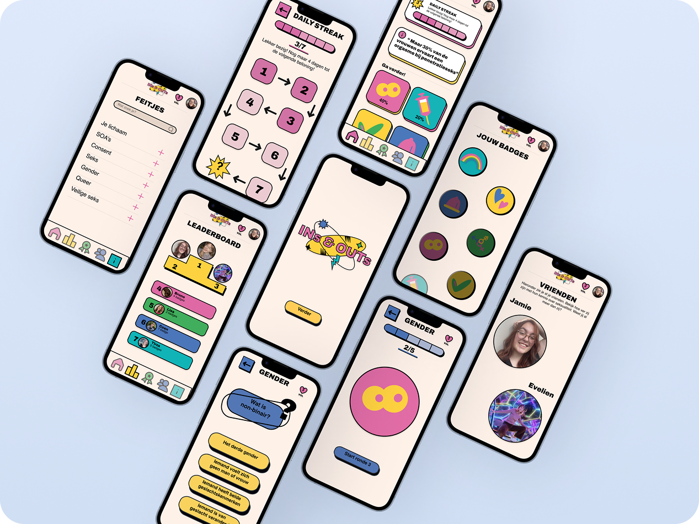
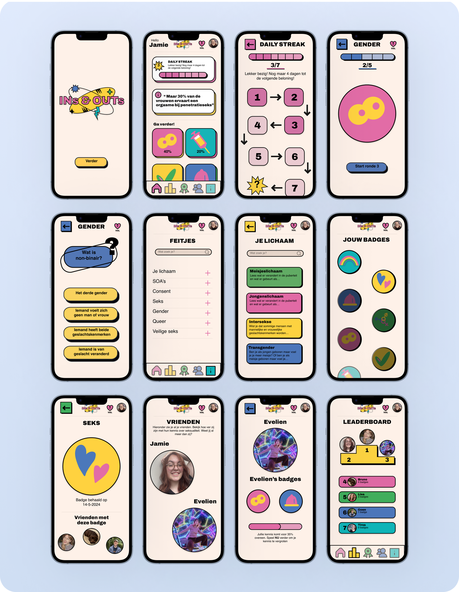

Back to projects
Back to projects
INs & OUTs - UX/UI design & gamification
“How can gamification make learning about sex and sexuality more engaging and easier to talk about?”
Sex education often focuses on the basics, while topics such as consent, gender identity and different sexualities can receive much less attention. At the same time, talking about sexuality can still feel uncomfortable, especially for young people. INs&OUTs was designed to create a playful and accessible environment where they can explore these topics at their own pace.
The core of INs&OUTs is a quiz-based game where players test and expand their knowledge about sex and sexuality. The quiz is divided into different categories, such as gender, consent, safe sex and sexual health. Within each category, players answer multiple-choice questions that gradually become more challenging. Correct answers increase their progress towards earning a badge, while the app provides additional facts and information for topics they want to learn more about.
Around this quiz mechanic, I added different gamification elements to motivate players to keep learning. Badges, daily streaks, progress tracking and a leaderboard turn gaining knowledge into something players can actively work towards. Players can also compare their progress with friends, creating an opportunity to start conversations about topics that might otherwise feel awkward to discuss.
The visual identity follows a neubrutalist style, using bold colours, rough shapes, black outlines and drop shadows. I chose this playful and expressive style to connect with the app’s younger target audience and to make sexual education feel less formal, clinical or intimidating.

App Slides
